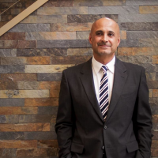

Plastic Surgeon Dr Sepehr Egrari, MD Bellevue, Washington
Name: Sepehr Egrari, MD
Last name: Egrari
Began aesthetic medicine in: 1999
Years experience: 21
Primary Specialty: Plastic Surgeon
Website: https://www.egrari.com/
Business: Egrari Plastic Surgery Center
Address: 2950 Northup Way
Address suite: Ste. 100
Phone: (425) 247-3124
International phone number: +14252473124
City: Bellevue
State: Washington
Zip Code: 98004
Country: US
Statement: Dr. Sepehr Egrari, is a prominent plastic surgeon who is a regular speaker at national and international meetings. He is well published, and known as an expert in facial rejuvenation, breast augmentation and body recontouring. He leads this exquisite Bellevue, Washington accredited facility.
Consulting Fees: 100$
Consultation note: Your consult fee is credited towards your surgical procedure.
Has Sponsored Offer : No
Special Offer Treatments: Restylane, Sculptra Aesthetic, Dysport, Restylane Silk, Restylane Lyft, Restylane Refyne, Restylane Defyne
End Time: 12/31/2020
Detail: Sign up for Aspire Galderma Rewards prior to your appointment to receive $20 off on each treatment listed below: Dysport®, Restylane® family, Sculptra® Aesthetic.
- Overlake Hospital

Sepehr Egrari, MD
- Medical: Chicago Medical School
- Residency: General Surgery, Los Angeles, CA
- Fellowship: Plastic and Reconstructive Surgery, The University of California at Davis Medical Center, Sacramento, CA
- American Society for Aesthetic Plastic Surgery (ASAPS)
- American Society of Plastic Surgeons (ASPS)
Viewed: 7/25/2008
Day of birth:
6/21/1965
Status: Alive
Certification:
American Board of Plastic Surgery
Plastic Surgery – General
Status: Certified
Active Time-Limited Initial Certification: 9/8/2001 – 12/31/2011
American Board of Surgery
Surgery – General
Status: Certified
Active Time-Limited Initial Certification: 12/14/1998 – 7/1/2009
Education: 1992 MD (Doctor of Medicine)
Location: 2950 Northup Way Ste 100Bellevue, WA 9804-1406 (United States)
GPS coordinates on map: 47.637006,-122.1902698
State: WA
Country: US
Map point: 47.621,-122.3470001
Google plus: https://plus.google.com/+EgrariPlasticSurgeryCenterBellevue/posts
- Abdominal Etching
- African American Rhinoplasty
- Age Spots Treatment
- Areola Reduction Surgery
- Arm Lift
- Asian Rhinoplasty
- Biocorneum
- Body Lift
- Botox
- Botox for Gummy Smile
- Brazilian Butt Lift
- Brazilian Butt Lift Revision
- Breast Augmentation
- Breast Fat Transfer
- Breast Implant Removal
- Breast Implant Revision
- Breast Implants
- Breast Lift
- Breast Lift with Implants
- Breast Reconstruction
- Breast Reduction
- BroadBand Light (BBL)
- Brow Lift
- Buccal Fat Removal
- Butt Augmentation
- Butt Implant Removal
- Butt Implants
- Butt Lift
- Capsular Contracture Treatment
- Cellfina
- Cellulite Treatment
- Cheek Augmentation
- Cheek Lift
- Chemical Peel
- Chin Filler
- Chin Implant
- Chin Liposuction
- Chin Surgery
- Clear and Brilliant
- Clitoral Hood Reduction
- CoolMini
- CoolSculpting
- Cryolipolysis
- Dark Circles Under Eye Treatment
- Dermaplaning
- Diastasis Recti Repair
- Double Eyelid Surgery
- Drainless Tummy Tuck
- Dysport
- Ear Surgery
- Earlobe Surgery
- Embrace Scar Therapy
- Epionce
- Eye Bags Treatment
- Eyelid Surgery
- Facelift
- Facelift Revision
- Facial
- Facial Fat Transfer
- Forehead Lift
- Fractional Laser
- Fraxel Laser
- Fraxel Re:pair
- Gynecomastia Surgery
- Hair Loss Treatment
- Hand Rejuvenation
- Hyaluronidase
- HydraFacial
- Hyperhidrosis Treatment
- Injectable Fillers
- Inspira Breast Implants
- Inverted Nipple Surgery
- IPL
- Juvederm
- Kybella
- Labia Augmentation
- Labiaplasty
- Laser Hair Removal
- Laser Peel
- Laser Resurfacing
- Laser Treatment
- Latisse
- Lip Augmentation
- Lip Lift
- Lip Surgery
- Liposuction
- Liposuction Revision
- Liquid Facelift
- Lower Facelift
- Male Nipple Reduction
- Male Tummy Tuck
- Melasma Treatment
- Microblading
- Microneedling
- Mini Facelift
- Mini Tummy Tuck
- miraDry
- Mommy Makeover
- Monsplasty
- MTF Body Contouring
- MTF Breast Augmentation
- MTF Laser Hair Removal
- Natrelle Breast Implants
- Neck Lift
- Nipple Surgery
- Nonsurgical Nose Job
- Nose Surgery
- Panniculectomy
- Pec Implants
- Photofacial
- Power-Assisted Liposuction (PAL)
- ProFractional Laser
- PRP for Hair Loss
- PRP for Scars and Stretch Marks
- PRP Injections
- Ptosis Surgery
- Radiesse
- Rejuvapen
- Restylane
- Restylane Silk
- Retin-A
- Revision Rhinoplasty
- Rhinoplasty
- SAFELipo
- Salicylic Peel
- Scar Removal
- Septoplasty
- Skin Rejuvenation
- Skin Tightening
- Skinbetter Science
- SkinMedica
- SkinPen
- SMAS Facelift
- Strattice
- Stretch Marks Treatment
- TCA Peel
- ThermiSmooth Body
- ThermiSmooth Face
- ThermiTight
- ThermiVa
- Thigh Lift
- Tumescent Liposuction
- Tummy Tuck
- Tummy Tuck Revision
- Ultherapy
- Vaginal Rejuvenation
- VI Peel
- Volbella
- Vollure
- Voluma
- Wrinkle Treatment
- YAG Laser
RealSelf Info
Rating: 4.7
Profile views: 41820
Answer count: 202
Review count: 69
Anonymous votes: 10
Offer count: 1
Profile created: Jan 8, 2009
Profile modified: Mar 27, 2020
Profile promotion: No
Profile inactive: No
Premier status: Profile Plus
Tier: Pro
RealCare Promise: Yes
Directory link: Board Certified Plastic Surgeon
RealSelf’s PRO: Yes
Doctor Designation Start Time: Jan 22, 2018
Doctor Designation End Time: Jan 1, 2033
Locations
- Bellevue, WA, US. GPS coordinates: 47.5975,-122.151001
- Seattle, WA, US. GPS coordinates: 47.621,-122.3470001
Latest ratings of treatments
- Inspira Breast Implants (Sep 2016) – 5/5
- Butt Augmentation (Mar 2020) – 1/5
- Labiaplasty (Nov 2018) – 5/5
- Rhinoplasty (Jul 2020) – 2/5
- Mommy Makeover (Feb 2019) – 5/5
- Brazilian Butt Lift (May 2013) – 1/5
- Inspira Breast Implants (May 2017) – 0/5
- Breast Lift with Implants (Dec 2019) – 5/5
- Breast Implant Removal (Sep 2018) – 5/5
- Inspira Breast Implants (Jun 2016) – 5/5
- Breast Implant Removal (Oct 2017) – 5/5
- Breast Implants (Dec 2003) – 5/5
- Breast Lift with Implants (Dec 2018) – 5/5
- Breast Fat Transfer (Jan 2018) – 5/5
- Body Lift (Oct 2018) – 5/5
Latest Prices
Inspira Breast Implants Prices
- $8600 – Sep 19, 2016 – Bellevue, WA
- $9700 – May 30, 2017 – Bellevue, WA
- $8999 – Jun 15, 2016 – Bellevue, WA
Butt Augmentation Prices
- $9000 – Mar 10, 2020
Labiaplasty Prices
- $8000 – Nov 19, 2018
Breast Reduction Prices
- $8500 – Sep 15, 2015 – Bellevue, WA
Mommy Makeover Prices
- $23300 – Feb 5, 2019
Breast Lift with Implants Prices
- $11000 – Dec 17, 2018 – Bellevue, WA
Breast Implant Removal Prices
- $6000 – Sep 8, 2018
- $9999 – Oct 11, 2017 – Bellevue, WA
Breast Implants Prices
- $5600 – Dec 18, 2003 – Bellevue, WA
Breast Fat Transfer Prices
- $12000 – Jan 8, 2018 – Bellevue, WA
Body Lift Prices
- $19000 – Oct 2018 – Bellevue, WA
Practice Locations
Tue: 8:30am – 5:00pm
Wed: 8:30am – 5:00pm
Thu: 8:30am – 5:00pm
Fri: 8:30am – 2:00pm
Tue: 8:30am – 5:00pm
Wed: 8:30am – 5:00pm
Thu: 8:30am – 5:00pm
Fri: 8:30am – 2:00pm
Special Offers
Start Time / End Time
Dec 3, 2019 /
Dec 31, 2020
Doctor's answers
Feb 17, 2019
Feb 12, 2019
Feb 12, 2019
Feb 12, 2019
Sep 15, 2018
Sep 9, 2018
Sep 9, 2018
Aug 23, 2018
Aug 6, 2018
Aug 6, 2018
Jul 20, 2018
Jul 5, 2018
Jul 5, 2018
Jun 8, 2018
May 30, 2018
Latest Before And After Photos
- Dr Sepehr Egrari, MD, Bellevue, Washington 22 Year Old Female – Gluteal Augmentation
- 29 Year Old Female – Gluteal Augmentation With Dr. Sepehr Egrari, MD, Bellevue, Washington (98004)
- Dr Egrari, Bellevue, Washington (98004) 52 Year Old Spouse Treated With Tummy Tightening Surgery
- Doctor Sepehr Egrari, MD, Bellevue, Washington 24 Year Old Mrs. Treated With Butt Augmentation Picture
- 22 Year Old Mrs. Treated With Butt Augmentation And Cosmetic Liposuction Of The Flanks Candidate With Doctor Sepehr Egrari, MD, Bellevue, Washington (98004)
- 23 Year Old Lady Treated With Butt Augmentation By Dr. Sepehr Egrari, MD, Bellevue, Washington (98004)
- Doctor Sepehr Egrari, MD, Bellevue, Washington 37 Year Old Miss Treated With Reverse Tummy Lift Surgery Patient
- Dr Sepehr Egrari, MD, Bellevue, Washington (98004) 49 Year Old Female Treated With Butt Lift
- 36 Year Old Mrs. Treated With Butt Augmentation With Doctor Sepehr Egrari, MD, Bellevue, Washington